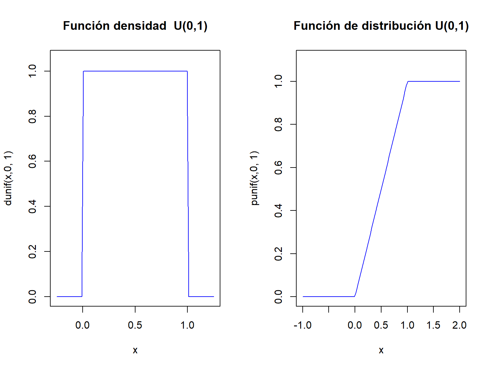
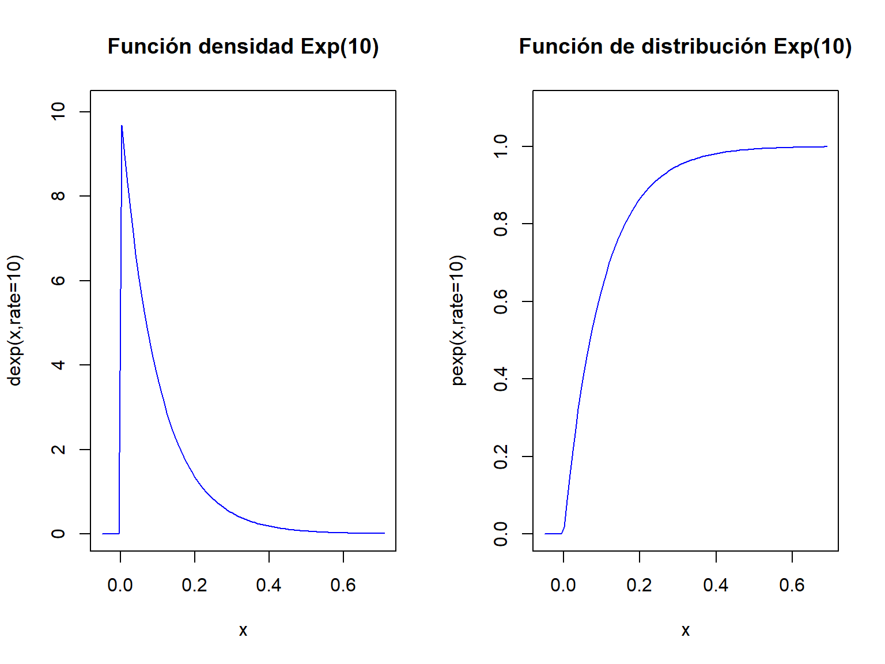
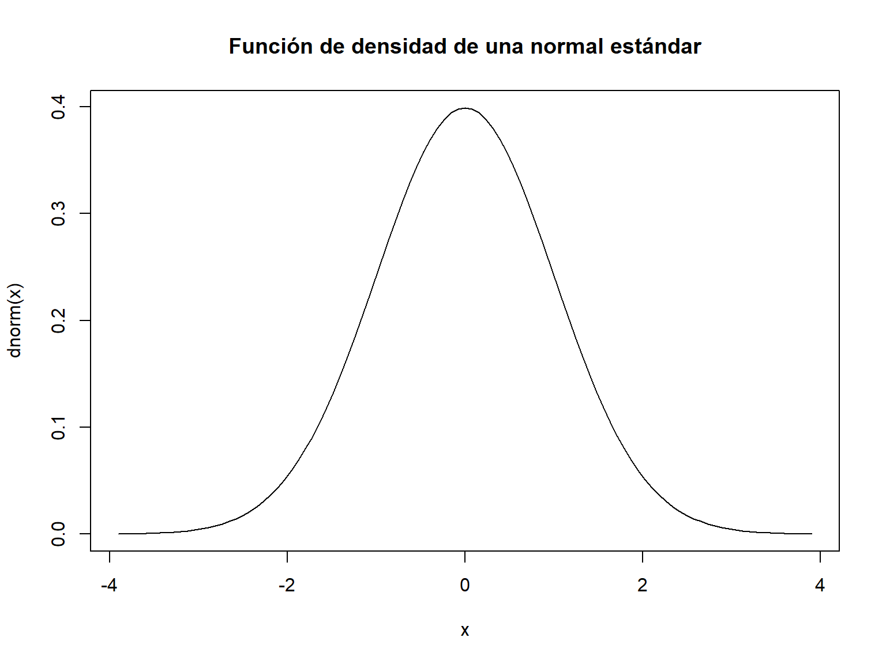
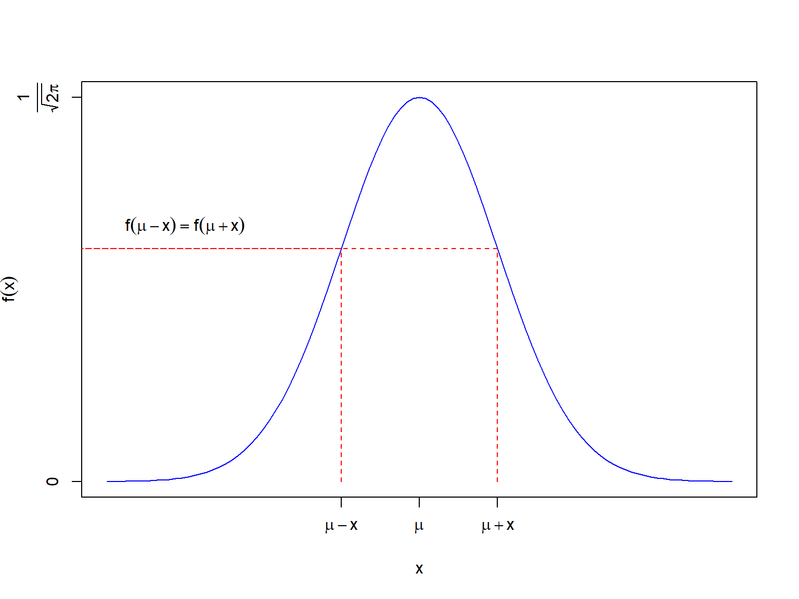
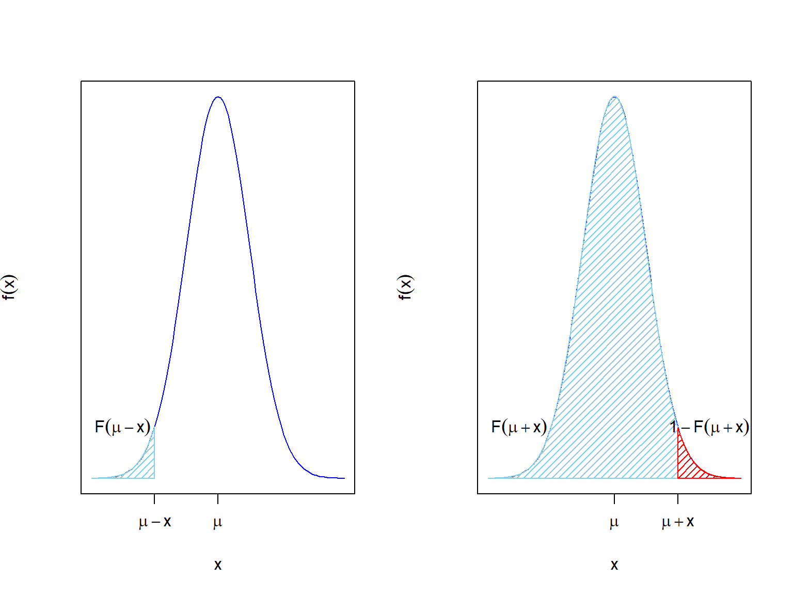

par(mfrow=c(1,2))
a=0;b=1
curve(dunif(x,a,b),xlim=c(a-0.25,b+0.25),ylim=c(0,max(1/(b-a)+0.05,0.1)),
col="blue",main=paste0("Función densidad U(",a,",",b,")"),
ylab=paste0("dunif(x,",a,", ",b,")")
)
curve(punif(x,a,b),xlim=c(a-1,b+1),ylim=c(0,1.1),
col="blue",main=paste0("Función de distribución U(",a,",",b,")"),
ylab=paste0("punif(x,",a,", ",b,")",cex.axis=0.8)
)
par(mfrow=c(1,1))5 Distribuciones notables continuas
5.1 Introducción
En esta segunda parte del tema de distribuciones notables veremos las distribuciones continuas más usuales: uniforme, exponencial y normal.
El lector debe tener en cuenta que exiten muchas otras distribuciones que deberá estudiar y algunas ya las hemos visto como la \(\chi^2\)
5.2 Distribución uniforme
Distribución uniforme
Una v.a. continua \(X\) tiene una distribución uniforme sobre el intervalo real \((a,b)\) ,con \(a<b\), si su función de densidad es
\[ f_X(x)=\left\{\begin{array}{ll} \frac1{b-a}, & \mbox{si } a<x<b,\\ 0, & \mbox{en cualquier otro caso.} \end{array} \right. \]
Ejercicio
Comprobar que el área comprendida entre \(f_X\) y la horizontal vale 1.
\[ \int_{-\infty}^{+\infty} f_x(x)\cdot dx=\int_{a}^{b} \frac{1}{b-a} \cdot dx=\left.\frac{x}{b-a}\right]_{x=a}^{x=b}=\frac{b}{b-a}-\frac{a}{b-a}= \frac{b-a}{b-a}=1. \]
Ahora calculemos su función de distribución
\[ F_X(x)=\left\{\begin{array}{ll} 0, & \mbox{si } x\leq a,\\ \frac{x-a}{b-a}, & \mbox{si } a<x<b,\\ 1, & \mbox{si } b\leq x. \end{array} \right. \]
- Si \(x\leq a\), entonces \[F_X(x)=\int_{-\infty}^{x} f(t)\cdot dt= \int_{-\infty}^{x} 0\cdot dt.\]
- Si \(a<x<b\) entonces ,
\[ \begin{array}{rl} F_X(x)&=\displaystyle\int_{-\infty}^{x} f(t)\cdot dt= \int_{-\infty}^{a} 0\cdot dt+\int_{a}^{x} \frac1{b-a} \cdot dt\\ &= \displaystyle 0 +\left.\frac{t}{b-a}\right]_{t=a}^{t=x}= \frac{x}{b-a}-\frac{a}{b-a}=\frac{x-a}{b-a}. \end{array} \]
- Por último si \(x\geq b\) entonces,
\[ \begin{array}{rl} F_X(x)&=\displaystyle\int_{-\infty}^{x} f(t) dt=\int_{a}^{b} \frac{1}{b-a} dt= \left. \frac{t}{b-a} \right]_{t=a}^{t=b} \\&=\displaystyle \frac{b}{b-a}-\frac{a}{b-a}=\frac{b-a}{b-a}=1. \end{array} \]
Denotaremos a la v.a. \(X\) uniforme en el intervalo \((a,b)\) por \(U(a,b)\).
Calculemos la esperanza de \(X\)
\[ \begin{array}{rl} E(X)&=\displaystyle\int_{-\infty}^{+\infty} x\cdot f_X(x) dx =\int_{a}^{b} x \cdot \frac{1}{b-a} dx = \left.\frac{x^2}{2\cdot (b-a)}\right]_{x=a}^{x=b}\\ &=\displaystyle \frac{b^2}{2\cdot (b-a)}-\frac{a^2}{2\cdot (b-a)} = \frac{b^2-a^2}{2\cdot (b-a)} \\ & =\displaystyle\frac{(b+a)\cdot (b-a)}{2\cdot (b-a)}= \frac{b+a}{2}. \end{array} \]
De cara a calcular su varianza, calculemos primero la esperanza de \(X^2\):
\[ \begin{array}{rl} E(X^2)&=\displaystyle\int_{-\infty}^{+\infty} x^2 f_X(x) dx=\int_{a}^{b} x^2 \frac1{b-a} dx =\left.\frac{x^3}{3\cdot (b-a)}\right]_{x=a}^{x=b} \\ &=\displaystyle\frac{b^3-a^3}{3\cdot (b-a)}=\frac{b^2+ab+a^2}{3}. \end{array} \]
Ejercicio
Demostrad que la igualdad \(b^3-a^3=(b-a)\cdot (b^2+ab+a^2)\) es cierta.
Utilizadla para el cálculo final del valor de \(E(X^2)\).
Calculemos ahora \(Var(X)\).
\[ \begin{array}{rl} Var(X)&=\displaystyle E(X^2)-(E(X))^2=\frac{b^2+ab+a^2}3-\left(\frac{b+a}2\right)^2\\&=\displaystyle \frac{b^2+ab+a^2}{3}-\frac{b^2+2ab+a^2}{4}\\ &=\displaystyle \frac{4\cdot (b^2+ab+a^2)-3\cdot (b^2+2ab+a^2)}{4\cdot 3} \\ &=\displaystyle \frac{b^2-2ab+a^2}{12}= \frac{(b-a)^2}{12}. \end{array} \]
5.2.1 Gráficas \(U(0,1)\)
El código en R para dibujar la función de densidad y la función de distribución de una distribución \(U(0,1)\) es el siguiente:

5.2.2 Transformación lineal de la v.a. uniforme
Si \(X\) sigue una distribución \(U(a,b)\) entonces \(Z=\frac{X-a}{b-a}\) sigue una distribución \(U(0,1)\).
Propiedad: Transformación lineal de la v.a. uniforme
Sea \(X\) una v.a. \(U(a,b)\)
Si \(scale\not=0\) y \(loc\) son dos constantes reales entonces
- si \(scale>0\), \(T=scale\cdot X+loc\) sigue una ley \(U(scale\cdot a +loc,scale\cdot b +loc)\)
- si \(scale<0\), \(T=scale\cdot X+loc\) sigue una ley \(U(scale\cdot b +loc,scale\cdot a +loc)\)
Demostración
Supongamos que \(X\) sigue una ley \(U(a,b)\), que \(scale>0\) y que \(T=scale\cdot X+loc\). Dejamos el caso \(scale<0\) como ejercicio.
La función de distribución de \(X\) es: \[ F_X(x)=P(X\leq x)=\left\{\begin{array}{ll} 0 & \mbox{ si } x\leq a\\ \frac{x-a}{b-a} & \mbox{ si } a\leq x\leq b \\1 & \mbox{ si } b\leq x\end{array}\right. \]
Si \(T\) vale \(T=scale\cdot X+loc\), su función de distribución será: \[ \scriptsize \begin{array}{rl} F_T(t)&=P(T\leq t)= P(scale\cdot X+ loc\leq t)= P\left(X\leq \frac{t-loc}{scale}\right)=F_X\left(\frac{t-loc}{scale}\right)\\ &= \left\{\begin{array}{ll} 0, & \mbox{ si } \frac{t-loc}{scale}\leq a\\\frac{\frac{t-loc}{scale}-a}{b-a}, & \mbox{ si } a\leq \frac{t-loc}{scale}\leq b,\\1, & \mbox{ si } b\leq \frac{t-loc}{scale},\end{array}\right.= \left\{\begin{array}{ll} 0, & \mbox{ si } t\leq scale\cdot a +loc, \\ \frac{t-(scale\cdot a+loc)}{scale\cdot (b-a)}, & \mbox{ si } scale\cdot a+loc \leq t\leq scale\cdot b+loc, \\ 1, & \mbox{ si } scale\cdot b+loc\leq t, \end{array}\right.\\ & = \left\{\begin{array}{ll} 0, & \mbox{ si } t\leq scale\cdot a +loc, \\ \frac{t-(scale\cdot a+loc)}{scale\cdot b+loc-(scale\cdot a+loc)}, & \mbox{ si } scale\cdot a+loc \leq t\leq scale\cdot b+loc, \\ 1, & \mbox{ si } scale\cdot b+loc\leq t,\end{array}\right. \end{array} \] por lo que \(T\) sigue una ley \(U(scale\cdot a +loc,scale\cdot b +loc)\).
Ejercicio
Sea \(X\) una variable \(U(0,1)\) y sea \(T=scale\cdot X+loc\):
Si \(T\) es \(U(-5,5)\) ¿qué valores toman \(scale\) y \(loc\)?
Si \(loc=-10\) y \(scale=10\) ¿qué distribución de probabilidad sigue \(T\)?
Si \(loc=0\) y \(scale=-1\) ¿qué distribución probabilidad sigue \(T\)?
5.2.3 Resumen v.a. con distribución uniforme, \(U(a,b)\)
| Distribución uniforme \(U(a,b)\) |
|---|
| Dominio \(D_X=(a,b)\) |
| \(f_{X}(x)\left\{\begin{array}{ll}\frac1{b-a}, & \mbox{si } a<x<b,\\ 0, & \mbox{en cualquier otro caso.}\end{array} \right.\) |
| \(F_X(x)=P(X\leq X)=\left\{\begin{array}{ll} 0, & \mbox{ si } x\leq a\\\frac{x-a}{b-a}, & \mbox{ si } a\leq x\leq b,\\1, & \mbox{ si } b\leq x.\end{array}\right.\) |
| \(E(X)=\frac{a+b}2\); \(Var(X)=\frac{(b-a)^2}{12}\) |
5.2.4 Cálculos con R
Sea \(X\) una \(v.a.\) \(U(a,b)\). Las funciones dunif(x,a,b) y punif(x,a,b) calculan la función de densidad y de distribución de \(X\) en el valor \(X\). Por ejemplo, para \(a=-1\), \(b=1\) y \(x=0.5\), los valores \(f_X(x)\) y \(F_X(x)\) valen:
dunif(x=0.5, min=-1,max=1)[1] 0.5punif(q=0.5,min=-1,max=1)[1] 0.75La función runif(n,a,b) calcula un muestra de observaciones de tamaño \(n\) que sigan la distribución \(U(a,b)\):
runif(n=5,min=-1,max=1)[1] -0.95948964 -0.32166677 0.03571264 -0.31427500 -0.57056764Por defecto, el valor de los parámetros a y b son 0 y 1, respectivamente:
dunif(x=0.5)[1] 1punif(q=0.5)[1] 0.5runif(n=5)[1] 0.1036122 0.8285488 0.4456555 0.9045562 0.96419315.2.5 Cálculos con Python
Sea \(X\) una \(v.a.\) \(U(-1,1)\). Tomando como “base” la v.a. \(U(0,1)\), los parámetros \(loc\) y \(scale\) valen: \(loc=-1\) y \(scale=2,\) ya que como hemos visto \(X=2*U(0,1)-1=U(-1,1)\).
En Python, hay que usar dichos parámetros para calcular la función de densidad y de distribución:
from scipy.stats import uniform
uniform.pdf(0.5,loc=-1,scale=2)0.5uniform.ppf(0.5,loc=-1,scale=2)0.0Para generar una muestra de valores aleatorios, hay que usar la función uniform.rvs:
uniform.rvs(size=30,loc=-1,scale=2)array([ 0.47463357, -0.14878709, 0.37671709, 0.40341551, 0.60477433,
0.69474811, 0.38876705, -0.40860533, -0.85787253, -0.83038632,
-0.44795684, 0.1807136 , -0.09090157, 0.44075578, 0.9162667 ,
0.73820975, -0.38777487, -0.89335877, -0.86770135, -0.48566437,
0.26847227, -0.45754594, 0.78911233, -0.93936248, -0.39752339,
0.71122271, -0.72721925, 0.17517252, 0.08256484, -0.42402106])Los valores de los parámetros por defecto son loc=0, scale=1:
uniform.pdf(0.5)1.0uniform.ppf(0.5)0.5uniform.rvs(size=5)array([0.08481364, 0.06716612, 0.61076953, 0.08359119, 0.54921363])5.3 Cuantiles de variables aleatorias
Definición Cuantiles
Si \(X\) es una v.a. con dominio \(D_X\) y \(0<p<1\) llamaremos cuantil de orden \(p\) al menor valor perteneciente al dominio \(x_p\in D_X\) tal que
\[P(X\leq x_p)\geq p.\]
En R, cada distribución \(X\) tiene la función qX(p,...) que devuelve precisamente el cuantil \(x_p\) tal que \(P(X\leq x_p)\geq p.\)
Ejemplo
Consideremos una v.a. \(X\) de distribución \(B(5,0.5)\).
Los cuantiles \(x_{0.3}\), \(x_{0.6}\) y \(x_{0.8}\) son los siguientes:
qbinom(c(0.3,0.6,0.8),5,0.5)[1] 2 3 3Calculemos a mano, el valor \(x_{0.3}\) y verifiquemos que da el mismo resultado que nos ha dado R.
La función de distribución de \(X\) es: \[ \small{ F_x(x)=P(X\leq x)= \left\{ \begin{array}{ll} 0, & x< 0, \\ 0.03125, & \mbox{ si } 0 \leq x< 1, \\ 0.18750, & \mbox{ si } 1 \leq x< 2, \\ 0.50000, & \mbox{ si } 2 \leq x< 3, \\ 0.81250, & \mbox{ si } 3 \leq x< 4, \\ 0.96875, & \mbox{ si } 4 \leq x< 5, \\ 1.00000, & \mbox{ si } 5\leq x. \\ \end{array} \right.} \]
El cuantil \(p=0.3\) es el primer valor \(x\in D_X\) tal que \(F_X(x)=P(X\leq x_{0.3})\geq 0.3\). Mirando la expresión anterior, comprobamos que \(x_{0.3}=2\) ya que \(F_X(2)=P(X\leq 2)=0.5 \geq 0.3\).
Cálculo de cuantiles
Dada una variable aleatoria \(X\), si existe la inversa de la función de distribución de \(X\), \(F_X^{-1}\), el cuantil de orden \(p\) sería el valor que tiene la función \(F_X^{-1}\) en \(p\): \(x_p=F^{-1}(p)\).
En caso de no existir la inversa, dado \(p\), definimos el conjunto \(A_p\) como:
\[ A_p =\{x\in\mathbb{R},\ |\ F_X(x)\geq p\}. \]
Entonces el cuantil \(p\) es el mínimo del conjunto \(A_p\) considerando sólo valores del dominio de la variable: \(x_p =\displaystyle\min_{x\in D_X}(A_p)\). Este mínimo siempre existirá y nos da una fórmula explícita para calcular los cuantiles de cualquier variable aleatoria.
Ejemplo: cuantiles en un un dado
Sea \(X\) la variable aleatoria uniforme discreta que nos da el número de puntos obtenidos en el lanzamiento de un dado (seis caras numeradas del 1 al 6).
Su dominio es \(D_X=\{1,2,3,4,5,6\}\) y su función de probabilidad es \[ P_X(x)=P(X=x)= \left\{ \begin{array}{ll} \frac{1}{6}, & \mbox{ si } x=1,2,3,4,5,6, \\ 0, & \mbox{ en otro caso. }. \end{array} \right. \]
Su función de distribución es:
\[ F_X(x)= P(X\leq x)= \left\{ \begin{array}{ll} 0, & \mbox{ si } x<1, \\ \frac{k}{6} & \mbox{ si } k\leq x< k+1 \mbox{ para } x= 1,2,3,4,6, \\ 1, & \mbox{si } x \geq 6. \end{array} \right. \]
La función siguiente llamada ddado nos define la función de probabilidad de \(X\) para un dado de \(n\) caras:
ddado=function(x,n=6) {
sapply(x,FUN=function(x) {
if( x %in% c(1:n)){return(1/n)} else {return(0)}})
}Por ejemplo, el valor de \(P_X(0.5)\) sería:
ddado(1.5,n=6)[1] 0y los valores de \(P_X(i)\) para \(i=1,\ldots 10\) sería:
ddado(1:10,n=6) [1] 0.1666667 0.1666667 0.1666667 0.1666667 0.1666667 0.1666667 0.0000000
[8] 0.0000000 0.0000000 0.0000000La función pdado nos da la función de distribución de \(X\):
pdado=function(x,n=6)
{
sapply(x,FUN=function(y){ if (y<1){ return(0)}else{if(y>=n){return(1)} else
{return(sum(ddado(c(1:(floor(y))),n=n)))}}})
}Los valores de \(F_X(i)\) para \(i=0,\ldots, 11\) serían:
pdado(0:11,6) [1] 0.0000000 0.1666667 0.3333333 0.5000000 0.6666667 0.8333333 1.0000000
[8] 1.0000000 1.0000000 1.0000000 1.0000000 1.0000000A continuación, construimos la función qdado que nos calcula el cuantil \(p\), para \(0\leq p\leq 1\), de la variable \(X\) como el mínimo de la antiimagen de \(p\) mediante la función de distribución \(F_X^{-1}(p)\)
qdado=function(p,n=6){
sapply(p,FUN=function(pp=p,nn=n)
{
if(pp<0 | pp>1) {return(NA)}
else {
aux=pp>=pdado(1:n,nn)
aux
ifelse(all(!aux),return(1),return(max(which(pp>=pdado(1:n,nn)))))}}
)
}Efectivamente los cuantiles del dado \(X\) son
qdado(1.5)[1] NAqdado(-1)[1] NAqdado(c(0.1,0.5,0.6,1,1.01,2))[1] 1 3 3 6 NA NA
Ejemplo: Cuantiles Binomial
Por ejemplo si \(X\) es una \(B(n=10,p=0.3)\)
set.seed(2222)
(q=runif(10,0,1)) [1] 0.36765818 0.18187591 0.82617679 0.58497444 0.95886983 0.10179894
[7] 0.75688767 0.24369144 0.67806543 0.06275295qbinom(q,10,0.3) [1] 2 2 4 3 6 1 4 2 4 1set.seed(2222)
rbinom(10,10,0.3) [1] 2 2 4 3 6 1 4 2 4 1Por ejemplo si \(X\) es una \(BN(n=3,p=0.1)\)
set.seed(2222)
(q=runif(10,0,1)) [1] 0.36765818 0.18187591 0.82617679 0.58497444 0.95886983 0.10179894
[7] 0.75688767 0.24369144 0.67806543 0.06275295qnbinom(q,3,0.1) [1] 19 12 41 27 61 9 36 15 32 7set.seed(2222)
rnbinom(10,3,0.1) [1] 18 9 6 46 66 49 24 44 19 265.4 Distribución exponencial
La distribución exponencial está asociadad al tiempo que transcurre entre dos eventos Poisson consecutivos.
Supongamos que tenemos un proceso Poisson con parámetro \(\lambda\) en una unidad de tiempo.
Dado un tiempo \(t\), definimos \(N_{t}\) como el número de eventos en el intervalo de tiempo \((0,t]\). La distribución de \(N_t\) es una \(Po(\lambda\cdot t)\). Consideremos la v.a. \(T\) como el tiempo transcurrido entre dos eventos Poisson consecutivos.
Sea \(t>0\), entonces
\[ \begin{array}{rl} P(T>t)&=P(\mbox{Cero eventos en el intervalo}(0,t])\\ &=P(N_{t}=0)= \frac{(\lambda t)^0}{0!} e^{-\lambda t}=e^{-\lambda t}. \end{array} \]
Tomando complementarios, la función de distribución de \(T\) será: \[ F_{T}(t)= P(T\leq t)=1-P(T>t)=\left\{\begin{array}{ll} 0, &\mbox{ si } t\leq 0,\\ 1-e^{-\lambda t},& \mbox{ si } t>0,\end{array}\right. \]
Para hallar la función de densidad de \(T\), basta derivar la expresión anterior: \[ f_{T}(t)=\left\{\begin{array}{ll}\lambda \cdot e^{-\lambda t}, & \mbox{ si } t>0,\\ 0, & \mbox{ si } t\leq 0. \end{array}\right. \]
Llamaremos a la variable \(T\) exponencial de parámetro \(\lambda\) y la denotaremos por \(Exp(\lambda)\).
5.4.1 Propiedad de la falta de memoria
Propiedad de la falta de memoria
Sea \(X\) una v.a. \(Exp(\lambda)\) entonces
\[P(X>s+t\big|X>s)=P(X>t)\mbox{ para todo } s,t\in \mathbb{R}\]
Demostración
Si \(X\) es una v.a. \(Exp(\lambda)\) tenemos que \(P(X>x)=1-P(X\leq x)=1-(1-e^{-\lambda\cdot x})=e^{-\lambda\cdot x}\) para todo \(x>0\)
Por tanto, \[ \begin{array}{rl} P(X>s+t\big|X>s) & =\frac{P(\{X>s+t\}\cap \{X>s\})}{P(X>s)}=\frac{P(X>s+t)}{P(X>s)}=\frac{e^{-\lambda\cdot (s+t)}}{e^{-\lambda\cdot s}}= \frac{e^{-\lambda\cdot s}\cdot e^{-\lambda\cdot t} }{e^{-\lambda\cdot s}}\\ & =e^{-\lambda\cdot t}=P(X>t). \end{array} \]
Ejemplo: El clásico problema del peluquero.
Una pequeña peluquería es regentada por un único peluquero. El peluquero está esperando al próximo cliente mientras lee el periódico.
Supongamos que \(N_T=\) número de clientes que llegan en el intervalo \([0,t)\) es una \(Po(\lambda\cdot t)\) entonces la variable \(T=\) tiempo entre dos clientes consecutivos sigue una ley \(Exp(\lambda)\).
Supongamos que \(t\) se mide en horas y que \(\lambda=4\) es el promedio de clientes por hora.
En este ejemplo la propiedad de la pérdida de memoria significa que si el peluquero lleva ya esperando más de \(s>0.25\) un cuarto de hora la probabilidad de que espere \(t=1/6\) de hora más (10 minutos) no cambia sigue siendo \(P(T>0.25+1/6|T>0.25)=P(T>1/6).\)
El tiempo esperado (en horas) hasta el siguiente cliente es
\[ E(X)=\frac{1}{\lambda}=\frac{1}{4}=0.25. \]
y la varianza es
\[ Var(X)=\frac{1}{\lambda^2}=\frac{1}{4^2}=0.0625. \]
Por último ¿Cuál es la probabilidad de que nuestro peluquero esté sin clientes (leyendo el periódico) más de 30 minutos (0.5 horas)?
\[ P(X>0.5)=1-P(X\leq 0.5)=1-(1-e^{-4\cdot 0.5 })=e^{-2}=0.1353353. \]
Si queremos hacer los cálculos con R,
pexp(0.5,rate=3)[1] 0.77686981-pexp(0.5,rate=3)[1] 0.2231302pexp(0.5,rate=3,lower.tail = FALSE)[1] 0.22313025.4.2 Cálculos con R y Python
La función de densidad, de distribución y la generación aleatoria de valores de una exponencial, se pueden obtener en R con:
dexp(0.001,rate=3)# no es una probabilidad es una densidad y puede ser >1[1] 2.991013pexp(0.5,rate=3) # P(X<0.5)[1] 0.7768698rexp(8,3)# ocho tiempos de una exponencial[1] 0.5069426 0.4497573 0.2876943 0.5514840 1.0552252 0.3168070 0.2488148
[8] 0.2377065Y en Python con:
from scipy.stats import expon
expon.pdf(0.0001,scale= 1./3)2.9991001349865014expon.cdf(0.5,scale= 1./3) 0.7768698398515702expon.rvs(scale=1./3,size=10)array([0.03776335, 0.04704156, 0.80924523, 0.33709041, 0.6549947 ,
0.01416951, 0.30792412, 0.33040141, 0.23973566, 0.45537027])5.4.3 Resumen v.a. con distribución exponencial \(Exp(\lambda)\)
| \(X\) sigue una distribución \(Exp(\lambda)\) |
|---|
| \(D_X=(0,+\infty)\) |
| \(f_{X}(x)=\left\{\begin{array}{ll} \lambda\cdot e^{-\lambda x} & \mbox{ si } x>0\\ 0 & \mbox{ si } x\leq 0 \end{array}\right.\) |
| \(F_X(x)=P(X\leq X)= \left\{\begin{array}{ll} 0 &\mbox{si } x\leq 0\\1-e^{-\lambda x}& \mbox{si } x>0\end{array}\right.\) |
| \(E(X)=\frac{1}{\lambda}\); \(Var(X)=\frac{1}{\lambda^2}\) |
5.4.4 Gráficas densidad y distribución \(Exp(\lambda=10)\)
lambda=10
par(mfrow=c(1,2))
curve(dexp(x,rate=lambda)
xlim=c(-0.05,round(qexp(0.99,rate=lambda,2),2)+0.25),
ylim=c(0,dexp(0,lambda)+0.1),col="blue",
main=paste0("Función densidad Exp(",lambda,")"),
ylab=paste0("dexp(x,rate=",lambda,")"))
curve(pexp(x,rate=lambda),xlim=c(-0.05,qexp(0.999,10)),
ylim=c(0,1.1),col="blue",
main=paste0("Función de distribución Exp(",lambda,")"),
ylab=paste0("pexp(x,rate=",lambda,")"))
par(mfrow=c(1,1))
Ejercicio
Consultad en el manual de Python scipy.stats.
Dibujad la función de densidad y de distribución de una \(Exp(10).\)
Ejercicio: las bombillas que no envejecen
Supongamos que compramos una bombilla led que promete un valor esperado de duración de 10000 (1.14 años) horas de funcionamiento continuo. Además, nos aseguran que la distribución de \(X\), el número de horas de funcionamiento continuo de una bombilla led, sigue una ley exponencial.
- Si \(X\) es \(Exp(\lambda)\) ¿cuál es el valor del parámetro \(\lambda\)?.
- ¿Cuál es la probabilidad de que una bombilla led ilumine más de 2 años?
- Supongamos que ya tengo una bombilla led funcionando 1 año ¿Cuál es la probabilidad de que dure dos años más?
- ¿Cuál es la varianza de la duración en horas de este tipo de bombillas?
5.5 Distribución normal o Gaussiana
Una de las variables aleatorias continua más populares es la llamada distribución normal o Gaussiana .
\[ f_{X}(x)=\frac1{\sqrt{2\cdot\pi\cdot\sigma^2}} e^{-\frac{1}{2}\cdot\left(\frac{x-\mu}{\sigma}\right)^2}, \] para todo \(x\in \mathbb{R}.\)
La gráfica de esta función de densidad es conocida como campana de Gauss.
La v.a. normal con \(\mu=0\) y \(\sigma=1\) recibe el nombre de normal estándar y se suele denotar por la letra \(Z\) normal \(N(0,1)\). El siguiente código la dibuja.
curve(dnorm(x),
main="Función de densidad de una normal estándar",
xlim=c(-3.9,3.9))5.6 Gráfica distribución normal o Gaussiana

5.6.1 Propiedades de la función de densidad de la distribución normal
Propiedades de la función de densidad de la distribución normal
Sea \(X\) una v.a. \(N(\mu,\sigma)\) y sea \(f_{X}\) su función de densidad. Entonces:
- La función \(f_{X}\) verifica todas las propiedades de las funciones de densidad: \(f_X(x)>0\), para todo \(x\in\mathbb{R}\) y \(\displaystyle\int_{-\infty}^\infty f_X(x)\,dx=1\).
- La función \(f_X(x)\) es simétrica respecto de la recta \(x=\mu\): \(f_{X}(\mu-x)=f_{X}(\mu+x)\), para todo \(x\in\mathbb{R}\).
- \(f_{X}\) tiene un único máximo absoluto en \(x=\mu\) que vale \(f_X(\mu)=\frac{1}{\sqrt{2\pi\sigma^2}}\).
- Si \(F_{X}\) es la función de distribución de \(X\), entonces \(F_{X}(\mu+x)=1-F_{X}(\mu-x)\), para todo \(x\in\mathbb{R}\).
- En particular si \(Z\) es una \(N(0,1)\) entonces \(F_{Z}(-x)=1-F_{Z}(x)\), para todo \(x\in\mathbb{R}\).
- \(Z=\frac{X-\mu}{\sigma}\) es una v.a. \(N(0,1)\) y \(X=\sigma\cdot Z+\mu\) es una \(N(\mu,\sigma)\) donde \(Z\) es la normal estándar.
\[ F(x)=\displaystyle\int_{-\infty}^{x} {1\over{\sqrt{2\cdot \pi\cdot\sigma^2}}} e^{-{1\over 2}{\left({t-\mu}\over{\sigma}\right)}^2} dt. \]
La función \(F(x)\) no tiene ninguna expresión algebraica “decente”. Es por esta razón, y por comodidad, que esta función está tabulada o hay que calcularla usando un software estadístico.
5.6.2 Resumen v.a. con distribución normal, \(N(\mu,\sigma)\)
| \(X\) sigue una distribución \(N(\mu,\sigma)\) |
|---|
| \(D_X=\mathbb{R}=(-\infty,+\infty)\) |
| \(f_{X}(x)=\frac{1}{\sqrt{2\pi\cdot\sigma^2}}\cdot e^{\frac{-(x-\mu)^2}{2\cdot \sigma^2}}\mbox{ para todo }x\in \mathbb{R}.\) |
| \(\displaystyle F_X(x)=P(X\leq X)=\int_{-\infty}^x f_X(t) dt.\) |
| \(E(X)=\mu\); \(Var(X)=\sigma^2.\) |
5.6.3 Cálculos con R
Las funciones que calculan la función de densidad y de distribución de una variable \(N(\mu,\sigma)\) en un valor x son dnorm(x,mean=mu,sd=sigma) y pnorm(x,mean=mu,sd=sigma), respectivamente. Por ejemplo, para una variable \(X\sim N(\mu=1,\sigma=2)\) la función de densidad \(f_X(2)\) se puede calcular de la forma siguiente:
dnorm(2,mean=1,sd=2)[1] 0.1760327y la función de distribución \(F_X(2) = P(X\leq 2)\) de la forma siguiente:
pnorm(2,mean=1,sd=2) [1] 0.6914625El cuantil \(x_{0.95}\) es el valor que cumple \(P(X\leq x_{0.95})=0.95\) como
qnorm(0.95,mean=1,sd=2)[1] 4.289707Y la generación aleatoria de valores según \(X\) como
rnorm(n=5,mean=1,sd=2)[1] 0.9806747 5.5415845 2.8174087 -2.4085639 0.89204355.6.4 Cálculos con Python
De forma la forma habitual importaremos norm de scipy.stas los parámetros son loc y scale la media \(\mu\) y la desviación estándar \(\sigma\).
from scipy.stats import normPor ejemplo para una \(X\sim N(\mu=1,\sigma=2)\), la función de densidad \(f_X(2)\):
norm.pdf(2,loc=1,scale=2)0.17603266338214976y la función de distribución \(F_X(2) = P(X\leq 2)\):
norm.cdf(2,loc=1,scale=2)0.6914624612740131El cuantil \(x_{0.95}\) es el valor que cumple \(P(X\leq x_{0.95})=0.95\) como
norm.ppf(0.95,loc=1,scale=2)4.289707253902945Y la generación aleatoria de valores según \(X\) como
norm.rvs(loc=1,scale=2,size=5)array([ 2.08217969, -0.21505203, 0.69210083, -1.3129591 , 0.01430119])Consultad SciPy.org para dibujar las funciones de densidad y de distribución con Python.
5.6.5 Resumen de la distribución normal
Propiedades de la función de densidad de la distribución normal
La función de densidad de la distribución normal tiene las siguientes propiedades:
- La función \(f_X\) es continua.
- \(\int_{-\infty}^{+\infty} \frac{1}{\sqrt{2\cdot\pi\cdot \sigma^2}}\cdot e^{-\frac{1}{2}\cdot \left(\frac{x-\mu}{\sigma}\right)^2} dx =1.\) (propiedad de todas las densidades).
- \(f(\mu+x)=f(\mu-x)\).
- \(F(\mu-x)=1-F(\mu+x)\).

- \(\lim\limits_{x\to+\infty}f(x)=\lim\limits_{x\to-\infty}f(x)=0\) es decir tiene asíntota horizontal a derecha e izquierda.
- \(f\) es estrictamente creciente si \(x<\mu\) y decreciente si \(x>\mu\).
- Alcanza el máximo en \(x=\mu\) y en este punto vale \(f(\mu)=\frac1{\sqrt{2\pi}\sigma}\)
- Tiene dos puntos de inflexión en \(x=\mu+\sigma\) y en \(x=\mu-\sigma\).

5.6.6 Transformaciones lineales de variables aleatorias normales
Propiedad: transformación lineal la distribución normal
Sea \(X\) una variable \(N(\mu,\sigma)\) entonces la variable \(Y=a X+b\) con \(a\not=0,b\in\mathbb{R}\) tiene distribución \(N(a\mu+b, |a| \sigma)\)
En particular si \(X\) sigue una \(N(\mu,\sigma)\), tomando \(a=\frac1{\sigma}\) y \(b= \frac{-\mu}{\sigma}\) obtenemos la tipificación o estandarización de la v.a.
\[Z={{X-\mu}\over {\sigma}}\] se distribuye \(N(0,1)\), es decir \(E(X)=0\) y \(Var(X)=1\).
Esta propiedad es muy útil, ya que utilizándola sólo necesitaremos tabular la \(N(0,1)\).
Si \(Z\) sigue una distribución \(N(0,1)\) diremos que \(Z\) sigue una distribución normal estándar.
Por lo tanto podemos calcular cualquier distribución normal desde la distribución normal estándar:
\[ F_X(x)=F_Z \left(\frac{x-\mu}{\sigma}\right). \]
5.6.7 Propiedades de la distribución normal estándar
Proiedades normal estándar
Sea \(Z\) una \(N(0,1)\).
En este caso, \(\mu=0\) y \(\sigma=1\). Podemos escribir algunas de las propiedades vistas para una distribución normal cualquiera de la forma siguiente:
- La propiedad \(f_X(\mu-x)=f_X(\mu+x)\) se traduce a \(f_Z(-x)=f_Z(x)\)
- La propiedad \(F_X(\mu-x)=1-F_X(\mu+x)\) se traduce a \(F_Z(-x)=1-F(x).\)
- Dado \(\delta>0\), \[ P(-\delta\leq Z \leq \delta)=F_{Z}(\delta)-F_{Z}(-\delta)=F_Z(\delta)-(1-F_Z(\delta))= 2\cdot F_Z(\delta)-1. \]
Ejercicio
Cálculos con la distribución normal estándar
Sea \(Z\) una distribución \(N(0,1)\), calcular las siguientes probabilidades en función de \(F_Z\).
- \(P(-4\leq Z \leq 4).\)
- \(P(-2\leq Z \leq 2).\)
- \(P(Z\leq -2).\)
- \(P( Z \leq 2).\)
- \(P( Z \geq 2).\)
- \(P( Z > 2).\)
- \(P( Z = 2).\)
- \(P( Z \geq -2).\)
Resolución:
- \(P(-4\leq Z \leq 4)=F_{Z}(4)-F_{Z}(-4)=2\cdot F_Z(4)-1\).
- \(P(-2\leq Z \leq 2)=F_{Z}(2)-F_{Z}(-2)=2\cdot F_Z(2)-1\).
- \(P(Z\leq -2)=F_Z(-2)=1-F_Z(2)\).
- \(P( Z \leq 2)=F_{Z}(2)\).
- \(P( Z \geq 2)=1-P(Z<2)=1-F_{Z}(2)\).
- \(P( Z > 2)=1-P(Z\leq 2)=1-F_{Z}(2)\).
- \(P( Z = 2)=0\) ya que es una distribución continua.
- \(P( Z \geq -2)=1-P(Z< -2)=1-F_{Z}(-2)=1-(1-F_Z(2))=F_Z(2).\)
5.6.8 Relación entre una distribución normal y la normal estándar
Para hallar la probabilidad de que \(X\) esté en un intervalo \((a,b)\) cualquiera, podemos usar la función de distribución de \(Z\) de la siguiente manera: \[ \begin{array}{ll} P(a<X<b)&=P\left(\frac{a-\mu}{\sigma}<\frac{X-\mu}{\sigma}<\frac{b-\mu}{\sigma}\right)= \\ &=P\left(\frac{a-\mu}{\sigma}<Z<\frac{b-\mu}{\sigma}\right)=F_{Z}\left(\frac{b-\mu}{\sigma}\right)- F_{Z}\left(\frac{a-\mu}{\sigma}\right). \end{array} \]
Para el caso particular en que el intervalo esté centrado en la media \(\mu\), o sea existe un valor \(\delta>0\) tal que \((a,b)=(\mu-\delta,\mu+\delta)\), obtenemos: \[ P\left(\mu-\delta\leq X \leq\mu+\delta\right)=2\cdot F_Z\left(\frac{\delta}{\sigma}\right)-1. \]
5.6.9 Ejemplo cálculo probabilidades normal
Ejercicio
Sea \(X\) una normal con media \(2\) y varianza \(4\). Calcular
- \(P(1< X< 2).\)
- \(P(X>3).\)
Solución
La primera probabilidad se calcula de la forma siguiente: \[ \begin{array}{ll} P(1< X< 2)&= P\left(\frac{1-2}{2}<\frac{X-2}{2}<\frac{2-2}{2}\right)= P\left(\frac{-1}{2}<Z<0\right)\\ &= F_{Z}(0)-F_{Z}(-0.5)=\frac12-1+F_{Z}(0.5)=-\frac12+F_Z(0.5). \end{array} \]
La segunda probabilidad se calcular de la forma siguiente: \[ P(X>3)=P\left(\frac{X-2}2>\frac{3-2}{2}\right)=P(Z>0.5)=1-F_{Z}(0.5). \]
Ejercicio
Sea \(X\) una normal con media \(2\) y varianza \(4\). Calcular con R y con Python las probabilidades
- \(P(1< X< 2).\)
- \(P(X>3).\)
Solución con R
pnorm(2,mean=2,sd=2)-pnorm(1,mean=2,sd=2) #P(1< X< 2)[1] 0.1914625pnorm(3,mean=2,sd=2,lower.tail =FALSE) #P(X>3)[1] 0.30853751-pnorm(3,mean=2,sd=2,lower.tail=TRUE) #P(X>3) = 1-P(X<=3)[1] 0.3085375Solución con Python
norm.cdf(2,loc=2,scale=2)-norm.cdf(1,loc=2,scale=2) #P(1< X< 2)0.191462461274013121-norm.cdf(3,loc=2,scale=2) #P(X>3) = 1-P(X<=3)0.30853753872598695.7 La distribución normal aproxima otras distribuciones
En los temas que siguen veremos como, bajo determinadas condiciones,
- la distribución normal puede aproximar la distribución binomial,
- la distribución normal puede aproximar la distribución Poisson
- la distribución normal es la distribución límite de la media aritmética de una muestra de variables aleatorias.